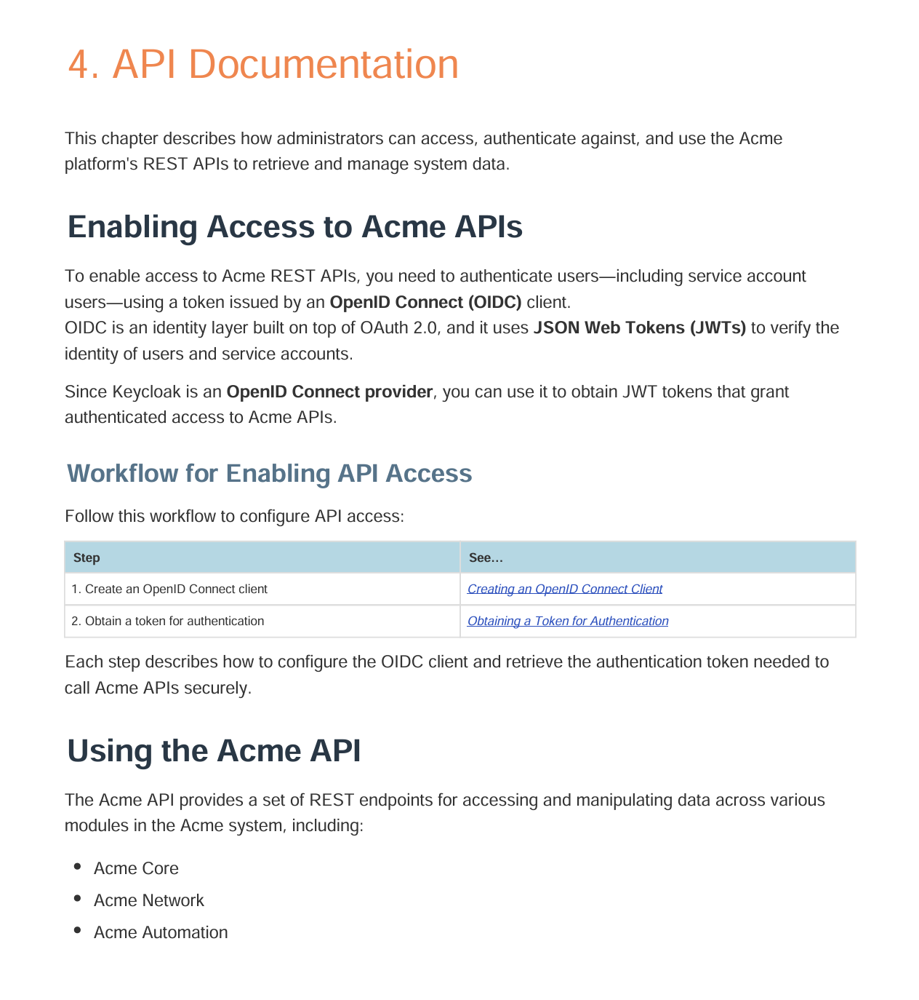
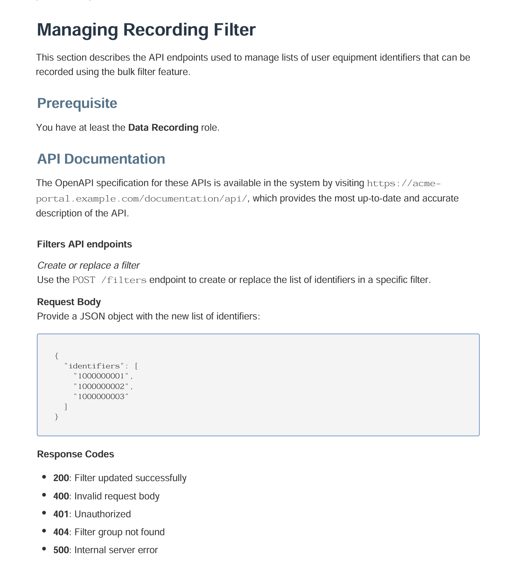
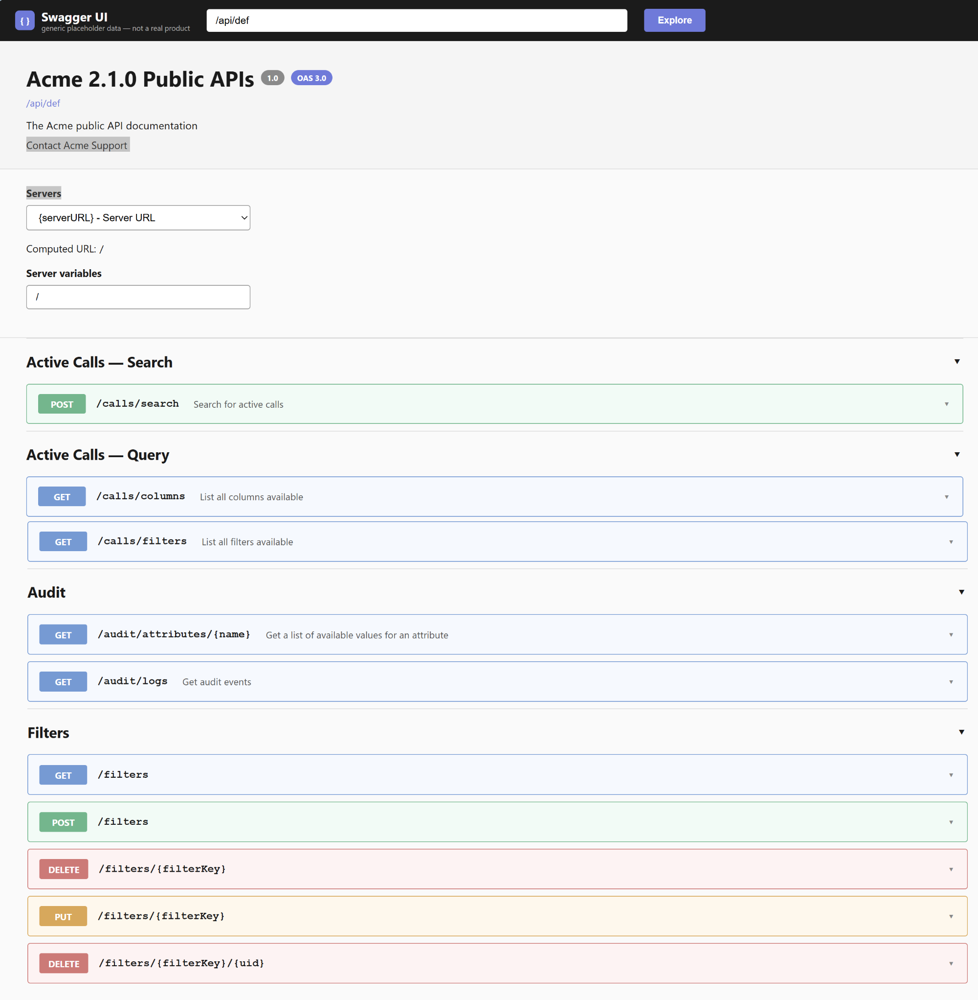

As part of an Administrator Guide for a telecom/network performance management platform, I wrote the API documentation chapter covering authentication and the use of the platform's REST APIs to manage system data.
The audience was support engineers and administrators working directly with the API.
I wrote the chapter independently, covering both the authentication workflow and the endpoint reference. To document the authentication flow, I first researched how Keycloak works as an OIDC provider — how it handles identity and issues JWT tokens.
The chapter explains what OIDC and JWTs are, how Keycloak is used as the OIDC provider, and the two-step workflow administrators follow to authenticate: creating an OIDC client and obtaining an authentication token.

For each API resource, I documented the available endpoints, including their purpose, HTTP method, request body, and response codes. Where relevant, I also included prerequisites and links to the OpenAPI specification.


Administrators and support engineers had a single chapter covering both the authentication workflow and the API reference, including endpoints, request and response formats, and error codes. This gave them the information they needed to work with the API without relying on separate engineering documentation.
I also researched Keycloak for a separate Admin Guide chapter on user and organization management, covering SSO configuration, group and role management, and Realms.